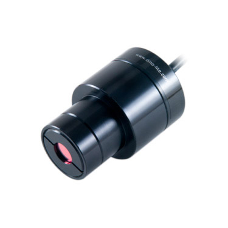

NDT inspection and detection of flaws
Non-destructive testing (NDT) is an important process in aerospace manufacturing and repair as it is the most economical and often the most practical way of discovering defects in the airframe structure and components.
Visual / Optical
Visual inspection is one of the most widely used of all the NDT tests as a first line of defence. Commonly, a NDT inspector using an eye loupe typically of 10x magnification will assess the component such as a fan blade, air foil etc for surface cracks and corrosion. The suspected flawed part is then sent to a lab for closer inspection under a microscope on the area of irregularity.
Dino-Lite usage in visual NDT
Dino-Lite is able to improve upon the first instance of NDT inspection by identifying defects quickly. Using the fluorescence models with UV or near UV wavelengths of 375nm or 400nm, surface flaws such as cracks, corrosion, or scratches in protective coating are clearly indicated on parts that have been treated with fluorescent penetrant inspection (FPI) dye.
The Dino-Lite can be used in the darkroom in addition to or in replacement of the UV light and eye loupe. With the ability to zoom up to 220x for most models, as well as capture images and measure length, diameter and angles, as well as recording of video, the NDT inspector can confirm or reject the suspicion of flaws without referring to a high powered microscope, thereby improving turnaround time and freeing up valuable resources.
-
 AM4115-FUTThe AM4115-FUT comes with near UV fluorescent LED light of 375nm wavelength with a 1.3MP EDGE sensor and maximum magnification of 220x
AM4115-FUTThe AM4115-FUT comes with near UV fluorescent LED light of 375nm wavelength with a 1.3MP EDGE sensor and maximum magnification of 220x -
 AM4115-FVTThe AM4115-FVT comes with near UV fluorescent LED light of 400nm wavelength with a 1.3MP EDGE sensor and maximum magnification of 220x
AM4115-FVTThe AM4115-FVT comes with near UV fluorescent LED light of 400nm wavelength with a 1.3MP EDGE sensor and maximum magnification of 220x -
AM4115T-CFVWThe AM4115T-CFVW integrates special 400nm LED excitation lights and a high-pass type emission filter that cuts off at 430nm. It is equipped with a 1.3MP EDGE sensor and maximum magnification of 220x